Two elections in one day, 24 October 2026 — do the numbers add up?
These tests found no clear signs of manipulation
I checked 6,029 polling stations in the regional races and 6,024 in the local races, using 2022 for comparison. These tests cannot rule out every kind of manipulation.
A candidate can win with 32%, and turnout differs between races
68% of valid votes in Košický kraj went to other candidates — Rastislav Trnka won with 32.0%
The local races had 79,290 more participants than the regional races across 3,556 comparable polling stations
What was decided on 24 October 2026
Slovakia elected governors for 8 regions (OSK) and mayors for 2,921 municipalities, plus the city mayors of Bratislava and Košice (OSO). Whoever gets the most votes wins in one round, even below 50%. Voters also chose councils. Official turnout was 46.56% in regional elections and 48.48% in local elections (2022: 43.75% and 44.86%). All eight governors kept their posts.
| Region | Winner | Share | Margin over the runner-up |
|---|---|---|---|
| Bratislavský | Juraj Droba SaS, Progresívne Slovensko, Demokrati, Team Bratislava | 70.96% | +59.4 pp |
| Trnavský | Jozef Viskupič Progresívne Slovensko, SaS, KDH, Demokrati… | 54.04% | +33.2 pp |
| Trenčiansky | Jaroslav Baška SMER-SD, HLAS, REPUBLIKA, SNS | 57.44% | +18.4 pp |
| Nitriansky | Branislav Becík HLAS, SMER-SD, SNS, REPUBLIKA… | 50.47% | +21.6 pp |
| Žilinský | Erika Jurinová SLOVENSKO, ZA ĽUDÍ, PS, SaS, KDH… | 52.06% | +26.3 pp |
| Banskobystrický | Ondrej Lunter independent | 64.81% | +49.8 pp |
| Prešovský | Milan Majerský KDH, SLOVENSKO, SaS, PS… | 48.77% | +13.6 pp |
| Košický | Rastislav Trnka independent | 32.00% | +1.3 pp — 3,117 votes |
Matúš Vallo — Bratislava
Ladislav Lörinc — Košice
Three main findings
The checks found no clear pattern of manipulation
The high-turnout areas selected by the Shpilkin check hold 0.4–4.7% of the leaders’ votes. Removing them changes vote shares by at most 0.6 percentage points. Round percentages are not unusually common (|z| < 3). Candidate vote-count digits fit the comparison patterns; combining all local independents gives one result needing caution (second-digit p = 0.017). Adding made-up ballots in a test increases the regional high-turnout measure ×6–14.
The rules let a candidate win with 32%
Two of eight governors won with less than half the votes: Trnka with 32.0%, Majerský with 48.8%. Among mayors, 13.6% won below 50%. Losing candidates received 37.5% of all mayoral votes, or 779,695 ballots. There is no second round.
Two races on one day, with different turnout
I compared 3,556 polling stations in municipalities with one local electoral district. The local races had 79,290 more participants overall. Some of the largest gaps were in Jarovnice (1,726), Zlaté Klasy (1,716) and Bystrany (1,145). A similar comparison for 2022 shows a gap of 99,229 across 3,417 stations. The totals cannot tell me why a person took part in only one race.
How the rules and the races affect the result
The governor and mayor races took place on the same day. In both, the candidate with the most votes wins. I looked at winners below 50%, changes since 2022 and differences in turnout between the two races.
1 · How support for party groups changed since 2022
I compared each joint candidate in 2026 with the combined 2022 votes of candidates put in the same political group. Viskupič gained 48%, Becík 81%, Jurinová 68% and Svítková 150%; Baška lost 13%. Several groups already had one candidate in 2022, so joining forces cannot explain all the gains. In Košický, the opposition total fell from 122,289 to 73,304 (−40.1%). Four years also brought changes in candidates and turnout. This comparison cannot show which voters switched or isolate the effect of splitting votes.
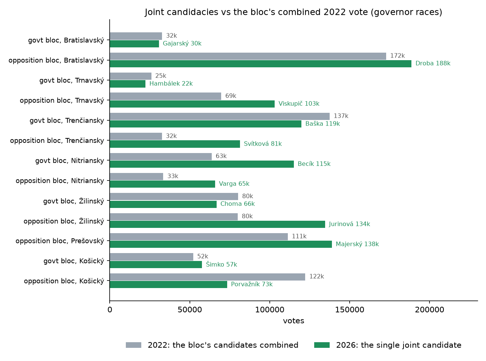
2 · Winning with less than half the votes
Trnka won Košický kraj with 32.0% of valid votes and a lead of 3,117; other candidates had 68.0% between them. Majerský won Prešovský with 48.8%. Among mayors, 134 winners had under 40%. In a hypothetical Košický run-off, the top two would compete again, while about 37% of first-round votes had gone to others. The ballots record one choice. They cannot tell me how those voters would choose between the finalists. Voting for another candidate does not necessarily mean opposing the winner in a second round.
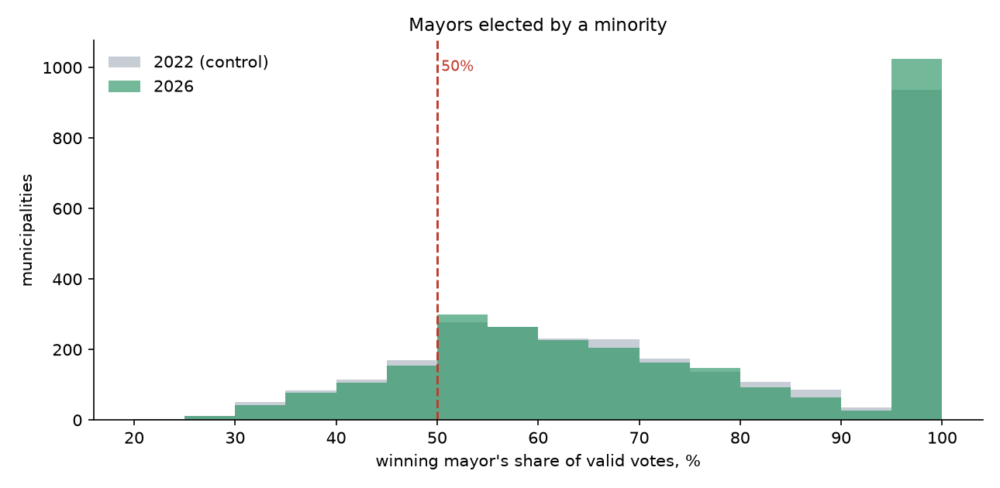
3 · The leaders stayed ahead in the saved count updates
I saved 36 updates covering all eight governor races and eight regional-capital mayor races. The leader never changed in these updates. Recording began after about 38% of regional polling stations had been counted nationwide; progress by region was unavailable. This covers only the saved updates. Stable leads cannot rule out manipulation before or between them, or show that every area counted at the same pace.
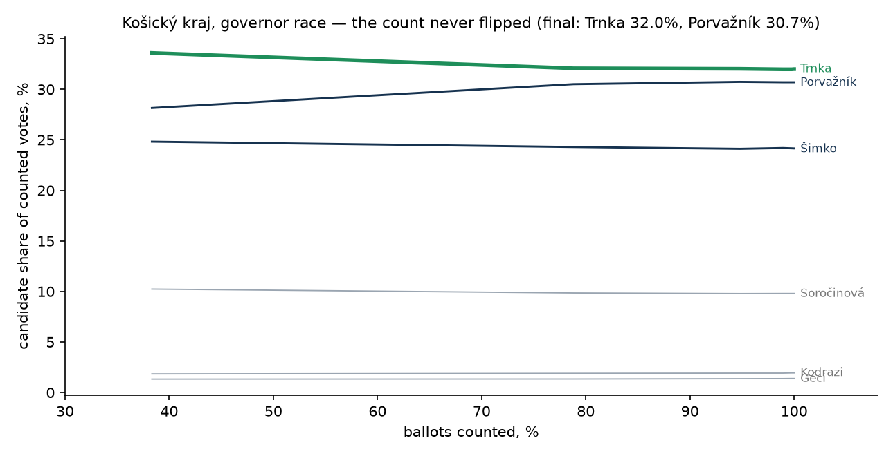
4 · More people took part in the local race
The comparison covers 3,556 polling stations in municipalities with one local electoral district. Local participation is higher by 79,290 overall. Places with high turnout in one race usually also have high turnout in the other (r = 0.844). In 113 stations, the registered-voter totals differ. Foreign permanent residents can vote in both races; EU citizenship does not give a local-only voting right. The gap cannot tell me whether pressure, favours in return for votes or other motives played a part.
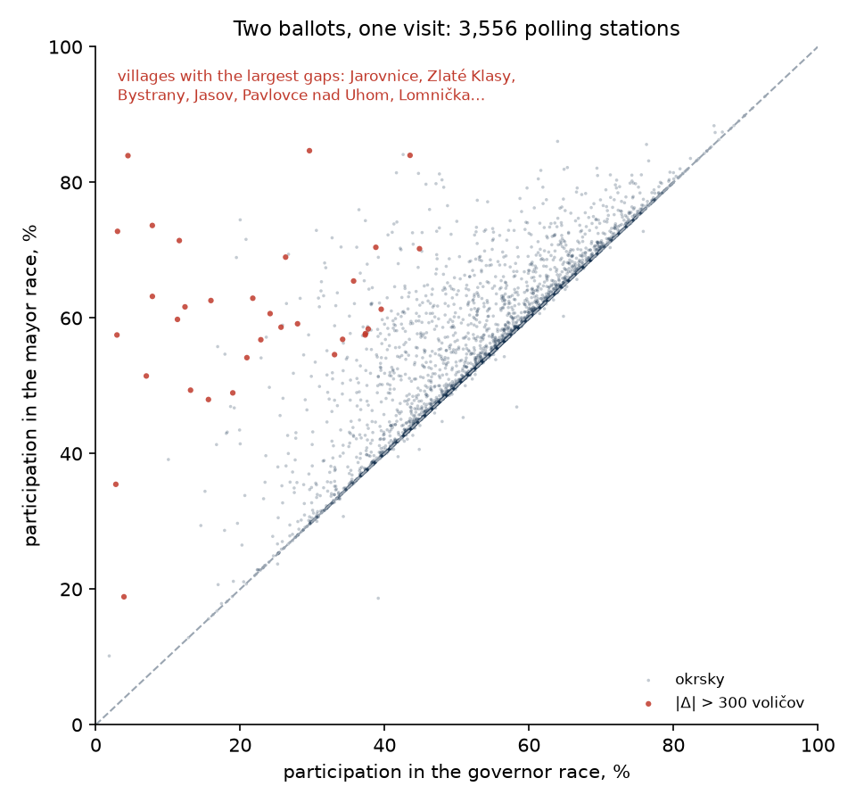
What the checks found
I used code anyone can inspect to check the official polling-station totals: each of the eight governor races against 2022, and the mayor races nationwide. Together, the tests found no clear signs of manipulation. The charts show Košický, the closest governor race, and the national mayor results. The full report covers the other regions and the limits of the checks.
Votes in unusually high-turnout areas (Shpilkin)
Areas above the turnout cutoff hold 0.4–4.7% of the winners’ votes. Removing all ballots there changes any vote share by at most 0.6 percentage points, similar to 2022. These votes are not necessarily fraudulent.
I set the turnout cutoff using the 2022 results: the 99.5th percentile, weighted by registered voters, near the top of that turnout distribution. I then counted leaders’ votes above the cutoff and recalculated shares without any ballots from those areas. This counts a high-turnout zone; it does not estimate how many ballots were fake by fitting a bell curve. The zone holds 0.42–4.69% of governor-race leaders’ votes and 0.43% of the combined independent candidates’ mayoral votes. Removing the zone is a what-if check, not a count of fraudulent ballots.
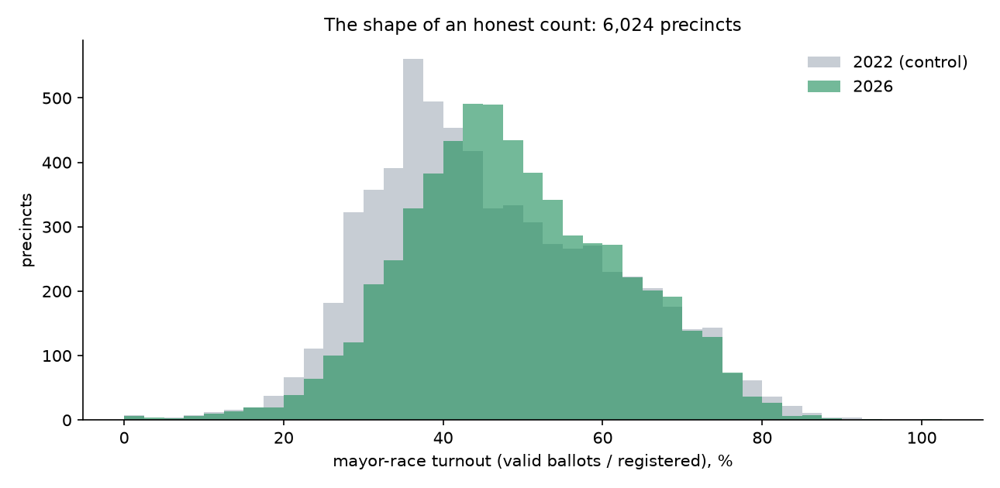
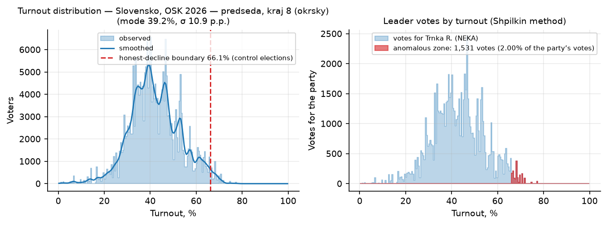
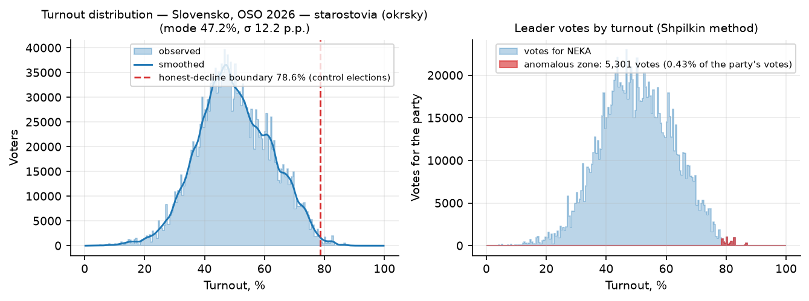
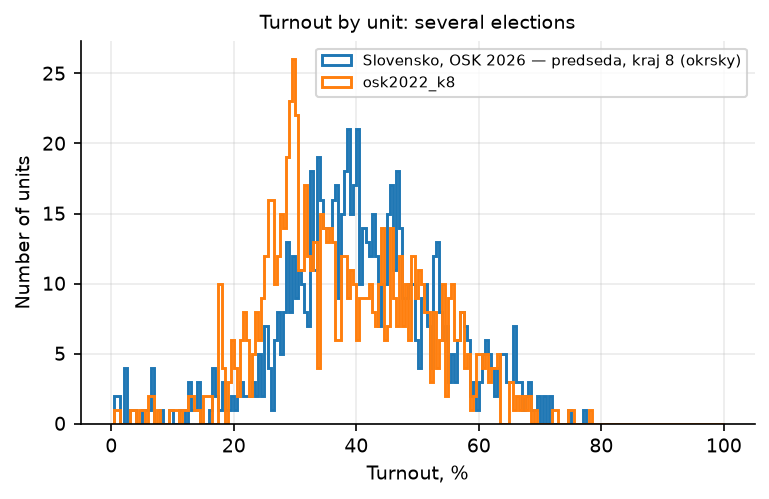
Does the winner do better where turnout is higher?
The chart shows one continuous group, with gradual differences between cities and villages. There is no separate group with both high turnout and a high vote share for the winner.
Adding ballots for one candidate can create a rising “comet tail”: areas with 80–100% turnout and very high support. Here the dots form one continuous group. The winner’s share rises with turnout in Bratislavský and Trenčiansky, and falls in Košický, alongside urban and rural differences. Stations above 80% turnout are rare and small. A relationship on this chart would not by itself prove added ballots.
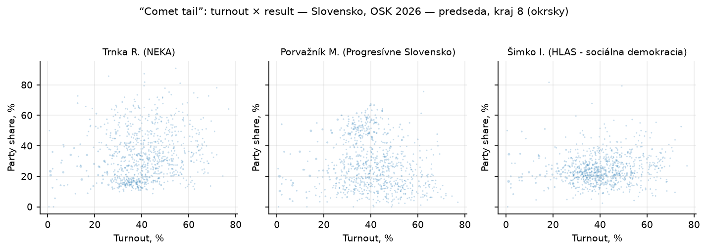
Groups on the turnout chart (Klimek)
The model’s two group sizes are in the range seen in comparison elections. There is no separate high-support group at 80–100% turnout.
The Klimek approach (PNAS 2012) fits two groups to the chart of turnout and the winner’s vote share. A separate group with 80–100% turnout and almost unanimous support can be a warning sign. Here the second group’s weight is 0.41–0.75, similar to comparisons run with the same tool: Portugal 2025, 0.66; Slovenia 2026, 0.42–0.48. There is no dense group above 80% turnout. The model describes groups; their size alone cannot show whether votes were manipulated.
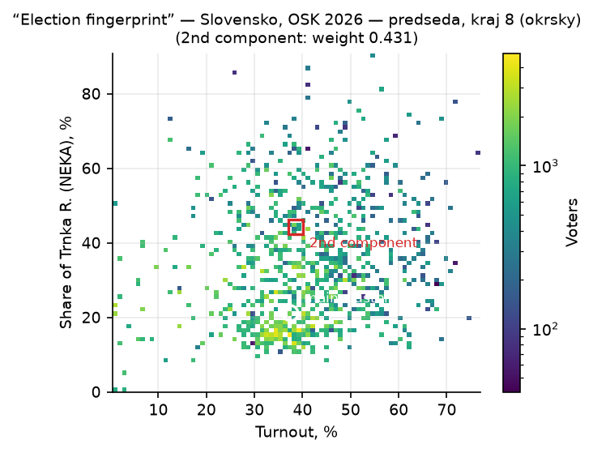
Are round percentages unusually common? (Kobak)
Whole-number turnout and vote-share percentages show no clear excess. All test scores are within ±2.7, most within ±1; these scores measure distance from the expected pattern.
Invented totals can favour round percentages. I compared how often whole percentages appear with random simulations based on these data. The z score measures distance from that expected result. Turnout scores range from −0.3 to +2.7, and winner-share scores from −2.3 to +1.5. Trnavský has +2.7, compared with +3.0 in 2022. That recurring result is consistent with the area’s small villages and does not by itself establish invented totals.
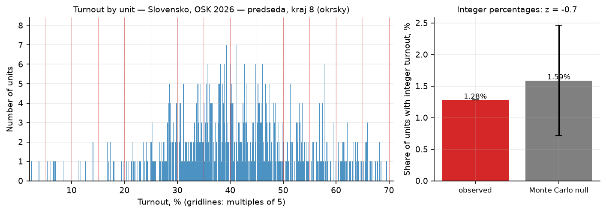
Do the digits in vote counts look unusual?
Governor candidates’ digits do not differ clearly from the comparison patterns. Combining all independent mayor candidates gives second-digit p = 0.017; pooling many different candidates makes that result harder to interpret.
I checked whether final digits occur equally often and whether second digits follow the Benford comparison pattern. Both the winner and runner-up in each of the eight governor races undergo both tests. Their lowest simulated p-value is 0.065. The mayoral independents total combines thousands of candidates and gives second-digit p = 0.017. Pooling candidates and local differences can affect this result. It cannot settle whether manipulation occurred.
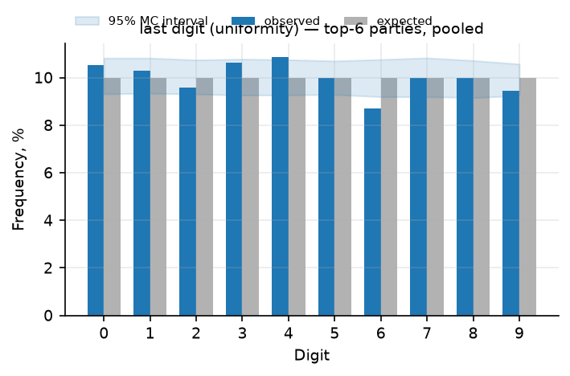
Which polling stations differ most from others?
The comparison flags 0–19 stations per region (0–2.2%) and 6.4% in the national mayor races. These are small places with differences in several directions, at rates of a similar order to the comparison elections.
I used two screens: compare each station with the middle value in its district (a robust z score, flagged at |z| > 4), and use Isolation Forest, a computer method that finds unusual combinations of four measurements. Governor races flag 0–19 stations each; Portugal 2025 gave 2.6% with the same tool. The mayoral comparison flags 383 of 6,024. Comparing a whole county mixes towns and villages with very different contests. Flagged places include small villages with 80–90% mayoral turnout while their regional turnout averages 45%. These differences can have ordinary explanations; the screen does not establish the cause in each place.
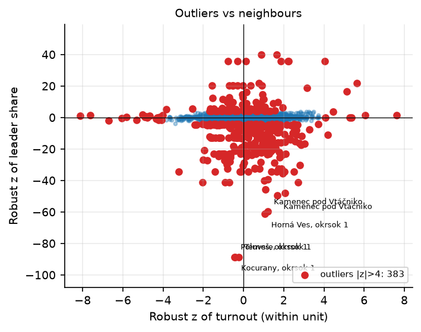
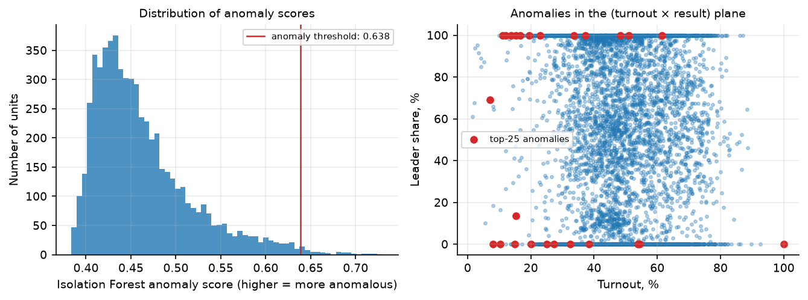
How much changed since 2022?
In 635 of 5,442 matched stations, both turnout and the leading group’s share changed by over 15 percentage points, up or down. The middle turnout change, +1.5 points, is for all matched stations, rather than just those flagged.
Across 5,442 matched stations, average turnout measured from valid ballots rises from 48.42% to 49.34%. The middle change is +1.5 percentage points. The check flags 635 stations where both turnout and the leading group’s share move by over 15 points in either direction. Nationally, independents rise from 57.75% to 59.79% and HLAS falls from 9.50% to 6.71%. Changes in party alliances can affect this comparison. Small national shifts cannot explain every flagged station.
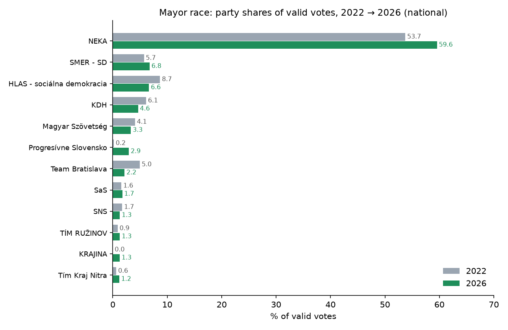
Comparing turnout in the two races
Across 3,556 comparable stations, turnout in the two races tends to rise together (r = 0.844). A similar overall gap appears in 2022. Neither comparison tells me what caused it.
I matched stations by municipality and station number, using only municipalities with one local electoral district. Of 3,556 matches, 113 have different registered-voter totals. Local participation is higher in 1,938, equal in 1,513 and lower in 105; the net gap is 79,290. A separate 2022 comparison covers 3,417 stations and gives a gap of 99,229. Foreign permanent residents can vote in both races. These are area totals; I cannot track a person’s ballot choices.
Can the checks detect made-up ballots I add?
Adding made-up ballots raises the regional Shpilkin high-turnout measure ×6–14. The checks detect these simulated changes; this does not mean they can detect every kind of fraud.
I tested the tools by raising turnout by 5–35 percentage points in 10% of stations, with 60–95% of added ballots going to the leader. The high-turnout measure grows ×6–14 by region. In Košický, it grows from 2% of the winner’s votes to tens of thousands of votes. This shows the tools respond to these changes in this dataset. Other kinds of manipulation may leave different traces or none that these checks can detect.
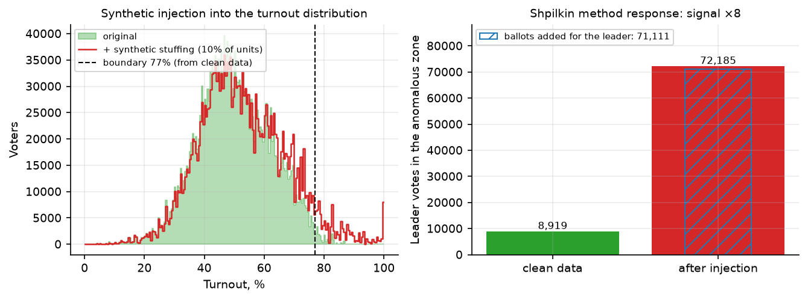
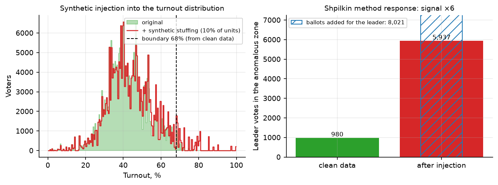
What these checks cannot tell us
- The tests found no clear signs of manipulation, but cannot rule it out. Area totals alone cannot reveal pressure on voters, favours exchanged for votes or misuse of official resources. The turnout gap does not prove any of these explanations.
- The downloads also contain regional and local council elections, which I did not analyse. Voters received council ballots too. “Two races” here means only the governor and mayor contests.
- Here, “voted” counts valid ballots in the race being analysed. Official turnout (46.56%/48.48%) also includes participants without a valid ballot for that race: 9.6% of regional participants in 2026. I checked the Bratislava and Košice city-mayor results (2 of 2,914), but they are outside the polling-station files.
- I can match 90–99.5% of polling-station IDs with 2022; Košice changed its numbering. The change test uses only stations that can be matched.
Data and how to repeat the checks
- Source: official definitive exports of the Statistical Office of the Slovak Republic — volbysr.sk (OSK/OSO 2026, downloaded 26 October 2026) and volby.statistics.sk (2022 controls).
- I added the polling-station totals and matched the official regional and national tables exactly. For all 8 regions and 8 city races, they also match the last of my 36 saved election-night updates. They agree with the headline results reported by media: Trnka’s lead of about 3,000 votes is exactly 3,117 here.
- Eligibility and ballot rules: Slovak public-administration portal. Foreign permanent residents can vote in both regional and municipal elections.
- Reproduce and inspect: analysis-tool, full statistical report, paradox analysis and data description.